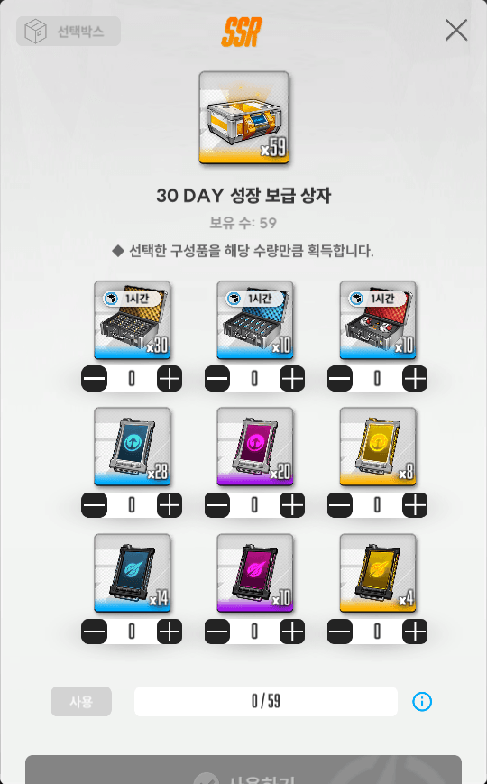
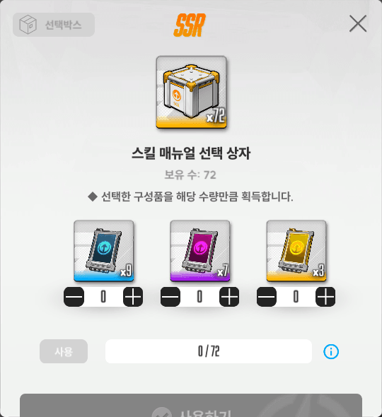

저번에 지나가는 글로 대충 썼는데 모르는 사람 많은 것 같길래저번에 지나가는 글로 대충 썼는데 모르는 사람 많은 것 같길래 좀 정리해서 공략글로 씀

월정액상자
얘는 시뮬레이션 룸과 스킬칩 분배가 같음
파랑:보라:노랑 = 7:5:2

스킬칩 선택상자
얘는 출석보상, 또는 이벤트마다 리필되는 캐시상점의 테크니컬 서포터 상품에서 주로 얻을 수 있음
파랑:보라:노랑 = 9:7:3
월정액 상자랑 비교할 시, 스킬칩 선택상자는 노랑>보라>파랑 순으로 선택하는게 효율적임. 이벤상점에서 추가로 수급이 되는 파랑, 보라와 다르게 노랑칩은 그렇지 않으므로 더더욱 그럼
다만 스킬 10렙작을 자주 하지 않는 경우엔 노랑칩보단 파랑, 보라칩이 부족할 수 있으므로 본인 필요한걸 받는게 맞음
여담으로 커스텀 패키지는 저 둘 사이 효율
이 글은 어디까지나 스킬칩이 두 종류 이상 모자랄때 월정액 상자로 노랑, 선택상자로 파랑을 받지는 않았으면 좋겠다는 취지로 쓴거임
절대 필요한 칩보다 노랑칩을 우선으로 받으라는 말이 아님
큰 차이는 아니지만 스킬작에 도움이 되길 바람